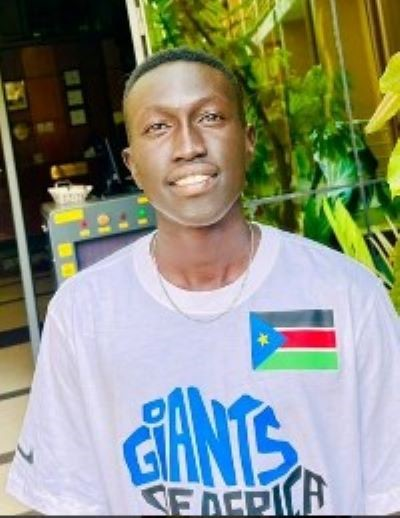

About me
Hello! My name is Erjok Agot and I am from South Sudan currently living in Kampala, Uganda. I love playing basketball, I am a 6'2 combo guard and my dream is to go pro in the future. I just love anything about a computer so I take on every course that will develop my computer skills and that's why I took on the web development certificate, I have found it so interesting so far and I am looking forward to taking more of these courses. My Family! I love it so much. It's a very big family and I am the first born of 7 kids and they give me motivation and inspiration to do my best in whatever it is I am taking.
Bor, South Sudan

South Sudan is the youngest nation in the world, we got independence in 2011 and it is located in the East African region of the African continent.